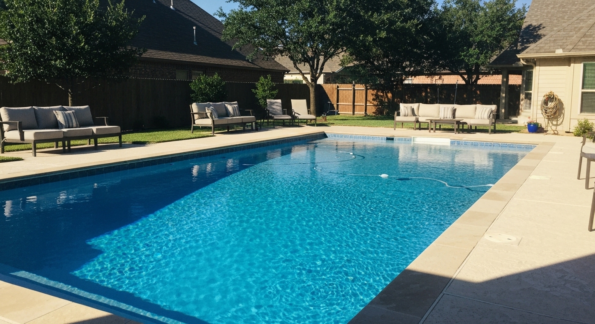

Serving Cibolo and all Guadalupe County communities · We call back within 1 hour
📞 (726) 268-5597
If your pool has been scratchy, stained, or fighting recurring algae for the past couple of seasons, you're dealing with a surface problem — not a chemistry problem. The chemistry is just responding to a substrate that can no longer hold water balance properly.
Cibolo is one of the fastest-growing cities in Texas — and a large portion of its housing stock was built between 2000 and 2015. That means a significant number of pools are now 10–20 years old, right in the window where original plaster starts failing, especially in San Antonio's hard alkaline water environment. Alkaline water from the Edwards-Trinity Aquifer deposits calcium on the plaster surface constantly, etching and weakening it faster than in softer-water markets.
Most Cibolo homeowners manage the symptoms for 2–3 seasons before calling. By then, they've spent more on extra chemicals than a resurface would have cost.
Your free estimate includes the exact quote for your specific pool. No surprises at invoice time.
We're about 35 minutes from Cibolo and work throughout Guadalupe County and the Tri-Cities corridor regularly. We're familiar with the construction styles and water conditions common to Cibolo's newer developments, and we know that the alkaline water in this area works against standard plaster faster than many homeowners expect.
Our startup chemistry is calibrated specifically for local water — not a generic formula. That matters for long surface life in this area.
No pressure, no obligation. Honest assessment of what your pool needs. Free, on-site, about 30 minutes.
📞 (726) 268-5597Learn about pool resurfacing cost in San Antonio or view our before & after gallery.
 Alamo Pool
Alamo Pool